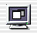

| PATH |

Building and running the application is just like building and running any other Java Client application. Simply perform the following steps.
Click in Project Builder's main window.
Click on the Targets tab.
Click the D2JCTutorial target in the Targets list.
Click the Executables tab on the content area.
Click Add on the Arguments panel.
On the text box type -WOPort
8888 -WOAutoOpenInBrowser NO. These arguments
facilitate the development process.
NO so
the client application is not automatically launched in a browser.
Java Client applications should be run as Java applications.Click  in Project Builder's main window.
In a shell, navigate to
the D2JCTutorial/build/D2JCTutorial.woa/Contents/MacOS directory.
Execute
the script D2JCTutorial_Client with
the HTTP address of the server application. You can copy it from
the output that Project Builder produced when it launched the server
application. The launch command should be similar to the following:
./D2JCTutorial_Client http://ebruce.apple.com:8888
Verify that your application's URL is correct. Check the messages in the Run panel. At the bottom, you'll see the following messages:
The URL for webserver connect is: http://ebruce.apple.com/cgi-bin/WebObjects/D2JCTutorial.woa/-8888 The URL for direct connect is: http://ebruce.apple.com:8888/cgi-bin/WebObjects/D2JCTutorial Waiting for requests...
Verify that the application URL you use to start the application has the same host name and port number as the one in the Run panel's output.
Verify that the project includes the JavaBusinessLogic framework. Direct to Java Client dynamically generates an application based on model files. In this application, the model files come from the JavaBusinessLogic framework.
© 2001 Apple Computer, Inc.